Annexos
Delicious
Actualment el vídeo s’ha integrat com un element més a Internet. Si voleu ensenyar un treball fet en vídeo la millor manera serà penjar-ho a YouTube o a qualsevol dels publicadors que hi ha a Internet. En aquestes pràctiques us proposem de navegar per Internet tot fent recerca dels diferents recursos de vídeo que hi ha. Ens centrarem en tots aquells que estiguin relacionats amb el món educatiu. Per tal de treballar col·laborativament us proposem de fer una recerca conjunta tot fent servir la principal eina de marcatge col·laboratiu que existeix a Internet:
- ic10m3uf6u7_001.jpg
Què és delicious?
Delicious és un entorn per marcar els diferents recursos i pàgines d’internet.
Mireu aquesta presentació de Lourdes Barroso publicat a scrib per entendre “Què és i com funciona Delicious”: http://www.slideshare.net/lbarroso/delicious-qu-es-y-cmo-usarlo
Com donar-se d'alta a delicious?
Per tal de donar-vos d’alta de delicious aneu a:
- 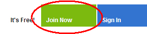
- ic10m3uf6u7_002.jpg
Feu un clic sobre l’opció de Register que trobareu en la part superior dreta. Si no sou usuaris de Yahoo us hi haureu de registrar prèviament.
Haureu d’escollir un nom d’usuari per a Delicious de manera que tindreu accessible el vostre espai Delicious a delicious/nom_usuari_delicious.
Un cop fet aquest primer pas de la instal·lació us oferiran d’instal·lar uns botons d’extensions o ajudes per al vostre navegador. En el cas de Firefox us proposa d’instal·lar una extensió que us servirà per veure en tot moment els vostres enllaços i fer-ne un amb un sol clic. Si sou usuaris de Firefox es recomana instal·lar aquesta extensió. El tercer pas us portarà cap a un petit tutorial on us explicarà les funcions de les extensions aplicades.
- 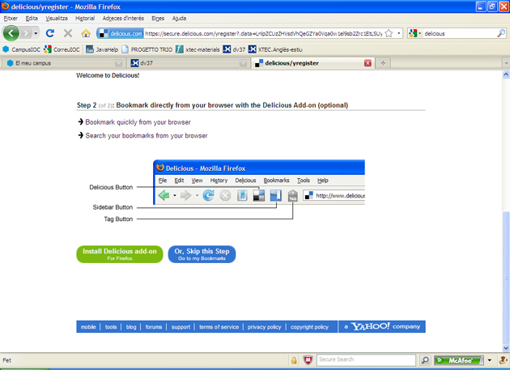
- ic10m3uf6u7_003a.jpg
Finalment podreu accedir al vostre compte.
- 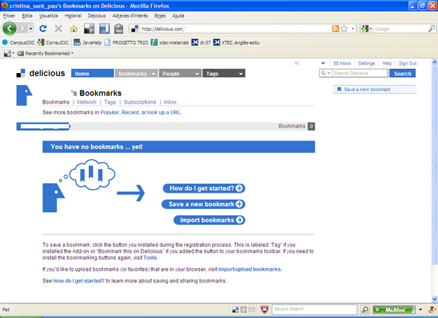
- ic10m3uf6u7_004a.jpg
Que farem amb delicious?
L’objectiu de Delicious és gestionar un conjunt de llocs web com ara els navegadors locals ho fan amb l’eina de Preferits. Per afegir una referència a un nou lloc web cal crear un nou bookmark.
Una de les principals característiques de Delicious és el seu sistema de catalogació i etiquetatge social 2.0. Fa servir un entorn d’etiquetatge que els diferents integrants de Delicious introdueixen. Per donar d’alta un enllaç a Delicious podeu fer servir el botó superior dret del navegador de Firefox que posa la paraula TAG (etiqueta).
S’obrirà una finestra de catalogació amb la URL en qüestió, el nom de la pàgina i la seva descripció, un espai perquè poseu les vostres notes, i sobre tot un espai per posar els TAG, etiquetes o descriptors. Les etiquetes seran paraules claus que descriuen d’una manera clara i senzilla aquest entorn web que es vol marcar. En el cas que altres persones de Delicious hagin marcat aquest espai, us sortiran al final uns descriptors recomanats o els descriptors més usuals. Tanmateix, si a la vostra configuració heu anotat algun usuari de Delicious com a network (treball en xarxa), podeu enviar-li aquest enllaç.
- 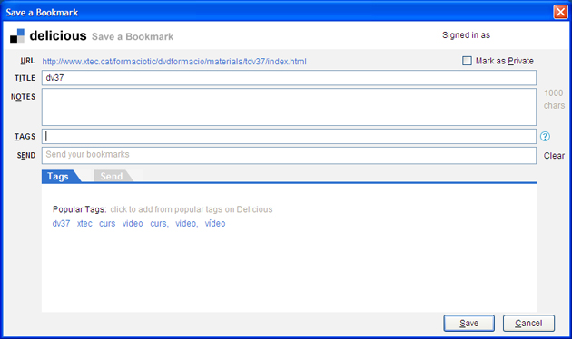
- ic10m3uf6u7_005a.jpg
Vídeo digital i Internet
Inicis del Vídeo Digital
Una de les grans revolucions de la tecnologia del vídeo ha estat el seu pas d’analògic a digital. La senyal de vídeo analògica era una senyal de llum que es convertia en un senyal elèctric i posteriorment en un gràfic electromagnètic que es gravava sobre un suport de cinta. Amb una tecnologia semblant a la de l’àudio amb els radiocassets.
Amb l’aparició del vídeo digital han canviat molt els processos i tècniques d’edició i transmissió de vídeo. En l’entorn professional varen sorgir formats de gravació en cintes de tipus digital i sistemes d’edició no lineal.
Fent una analogia. es va passar d’editar amb màquina d’escriure a fer-ho amb un tractament de textos. Va introduir metodologies com l’insert, el copiar i enganxar, etc.
En l’entorn no professional varen néixer els primers entorns de vídeo per a sistemes operatius. Apple va ser la primera empresa en crear un entorn de vídeo per al seu sistema operatiu: el Quicktime i el seu fitxer de vídeo digital el Enllaç extern. mov. Així mateix va inventar conjuntament amb Sony el protocol IEE1394 i els connectors Firewire que permetien el control i la transmissió de vídeo en format DV a l’ordinador. Windows també va crear el seu propi entorn de vídeo i els seu fitxer de vídeo digital el. avi.
A partir d’aquests entorns varen néixer els primers programes d’edició com el Premiere d’Adobe, Studio de Pynaccle, Imovie d’Apple i posteriorment Windows Movie Maker. Apareixen les capturadores que converteixen el vídeo analògic en digital. El format de cinta VHS va donar pas al DVD com a suport de visionat de vídeo i al mini DV com a format estàndard per a les càmeres domèstiques. Actualment, el vídeo digital s’ha integrat en diferents plataformes i suport com els telèfons mòbils, les consoles de jocs, les PDA, etc.
MPEG: l'estàndard de les empreses
Per tal de no crear diversitat d’entorns i fitxers de vídeo digital, les diferents empreses del sector varen crear un grup d’experts que desenvoluparien els estàndards de vídeo digital per als aparells de consum. MPEG són les inicials de Moving Picture Experts Group (grup d’experts d’imatge en moviment). Els principals estàndars desenvolupats per aquest grup són:
- MPEG 1: fitxer base per al desenvolupament de vídeo sobre CD el VideoCD. Aquests varen ser els primers fitxers de millor codificació i varen ser els primers en fer-se servir per adjuntar fitxers de vídeo en els correus electrònics. Té tres nivells de codificació i el tercer correspon a l’àudio i s’anomena Mp3. Aquest ha estat l’estàndar que s’ha imposat com a codificació d’àudio.
- MPEG 2: conjunt d’estàndars de fitxers que han servit per desenvolupar els principals entorns de vídeo digital com el DVD, la TDT, o la transmissió de televisió digital per satèl·lit.
- MPEG 3: estàndard pensat per a la televisió d’alta, definició que es va deixar de banda perquè mpeg2 ja podia cobrir aquestes necessitats.
- MPEG 4: estàndar pensat com a contenidor multimèdia de diferents objectes d’àudio, 3D, etc. Permet certa interactivtat. Dels seus tipus de codificació han sortit diferents códecs que s’han convertit en estàndars de vídeo digital: Dvix, Xvid, H.264. Actualment es fa servir en nous perifèrics com les Playstation, els Ipods o els anomenats Mp4.
- MPEG 7: estàndar que mitjançant llenguatge Xml intenta vehicular les diferents metadades dels vídeos i els seus continguts interns.
- MPEG 21: estàndar que vol normalitzar els drets i metadades dels diferents continguts que anomena objectes digitals (vídeo, àudio, etc)
Códecs i formats lliures o propietaris
La majoria de formats i códecs de vídeo han estat desenvolupats per empreses que són propietàries de les patents, per la qual cosa cal comprar algun programari per codificar el vídeo. Ja hem dit que Quicktime i .mov pertanyien a Apple i .avi a Microsoft. Els fitxers Mpeg també tenen unes patents de diferents empreses. Divx és un estàndar també propietari i cal comprar el codificador de l’empresa. Xvid és un códec molt semblant a Divx que si que està sota una llicència GNU. Així mateix la casa Vorbis ha desenvolupat un format lliure d’àudio l’ogg que té una versió de vídeo amb el còdec Theora.
- 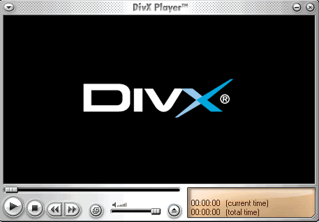
- ic10m3uf6u7_006.jpg
Divx és un exemple de códec creat al marge de les grans empreses i que s’ha convertit en un estàndar de vídeo per la seva qualitat. A més La pròpia casa Divx ha desenvolupat un lector específic per a vídeos d’alta qualitat que podreu baixar i instal·lar des de la pròpia web de Divx
Propietats dels fitxers de vídeo digital
La majoria de les propietats del vídeo digital són una adaptació de les pròpies del vídeo
- Resolució: la resolució és el tamany de les imatges del vídeo. El nombre de píxels d’amplada (wide) i alçada (height) que tindrà el quadre (frame). Hi ha diferents resolucions que vénen determinades pel códec i pel tipus de píxels que es fa servir. La majoria de resolucions tenen una relació 4/3 de pantalla de TV o 16/9 si és panoràmica.
- Còdec: el principal problema dels fitxers de vídeo digital és el seu gran pes. És per això que els diferents entorns i formats disposen dels anomenats Códecs. Els códecs són sistemes matèmàtics de compressió i descompressió de fitxers que intenten millorar la qualitat amb un menor pes del fitxer. Hi ha diferents códecs creats per diferents empreses, alguns d’ells s’han convertit en estàndars. Així, un fitxer. avi o. mov tindrà els seus corresponents códecs que en alguns casos són els mateixos com el còdec DV estàndar per a edició amb càmeres DV. O el Dvix per a una alta compressió.
- Framerate: és el nombre d’imatges per segon. O millor dit, el nombre de quadres per segon, ja que en televisió els quadres tenen dos camps corresponents a dues imatges correlatives. El frame pot ser entrellaçat amb dues imatges o desentrellaçat, anomenat també progressiu amb una sola imatge per quadre i que és com es visualitza a les pantalles d’ordinador. El nombre de quadres per segon se l’anomena FPS Frames per Second. En cinema es treballa a 25 fps, en la Televisió PAL (europea) a 24 fps. en la NTSC (americana) a 29 fps. En la majoria de fitxers de vídeo digital es pot variar i escollir els fps que es volen fer servir.
- Bitrate: la taxa de bit (bitrate) representa la quantitat d’informació que es pot guardar en un medi per unitat de temps. Això depèn de diferents factors, com són la freqüència de mostreig utilitzada per digitalitzar els materials multimèdia, els bits emprats per codificar la informació i la manera en què es fa i si es comprimeix o no. Amb tot això s’intenta trobar un punt d’equilibri entre quantitat de bits (el més baix possible) i qualitat (la més alta possible).
- 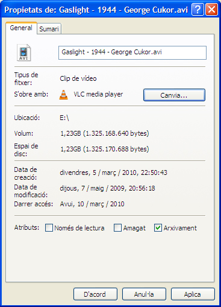
- ic10m3uf6u7_007.jpg
Podeu veure el Panell de Windows amb les propietats d’un fitxer de vídeo digital i podreu accedir amb ell prement el botó secundari i cercant el menú de les propietats.
Streaming: la transmissió de vídeo per internet
El principal problema dels fitxers de vídeo digital és el seu gran pes (mida en bytes que ocupa el fitxer) i la seva transmissió per Internet. La solució a aquest problema es va trobar en la tècnica del Streaming o flux de dades. Bàsicament, el fucionament recau en que aquest tipus de fitxers es poden veure mentre s’estan baixant.
Per visionar bé un fitxer en streaming el que importa és la relació entre la velocitat de baixada i la velocitat de visionat. Si la velocitat de visionat és major a la de baixada, molts reproductors es queden aturats uns moments indicant la paraula “bufering” i una icona que indica el tant per cent necessari per tornar a reproduir. En pocs segons es torna a visionar.
Si hi ha problemes amb l’ordinador o saturació de la xarxa, és recomanable aturar el visionat amb una pausa durant uns segons, perquè el fitxer pugui actualitzar dades posteriors al moment del visionat.
Per poder llegir el vídeo en directe cal un client o reproductor de vídeo que accepti els fitxers i protocols del servidor. Tres van ser les primeres empreses a adaptar els seus entorns de vídeo a la tecnologia Streaming.
- RealMedia: la casa Real Netwoorks va ser la primera en desenvolupar la tecnologia del Straming per a àudio i vídeo. Els seus reproductors real player i servidors es varen convertir en un dels tres estàndars de vídeo a la xarxa. Disposa d’un fitxer propi i un entorn de codificació. El seu desenvolupament ha rebut diferents crítiques des d’Internet, a l’igual que les seves funcionalitats.
- Quicktime: l’empresa Apple va desenvolupar la capacitat d’streaming en el seu entorn a partir de la versió 4.0. Va crear un Quicktime Server i va donar la possibilitat que els fitxers. mov tinguessin el downloading progressive amb una millor qualitat que els altres entorns.
- 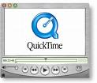
- ic10m3uf6u7_008.jpg
- Windows Media Vídeo: Microsoft va desenvolupar aquest entorn de vídeo per ser visionat mitjançant Windows Media Player, l’entorn de reproductor d’àudio i vídeo associat Windows. La seva dependència del sistema operatiu de Windows l’ha creat crítiques entre els diferents usuaris.
- 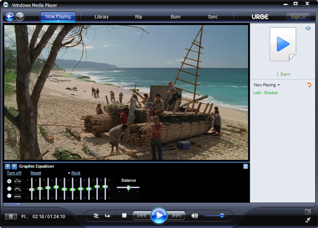
- ic10m3uf6u7_009a.jpg
La incorporació del vídeo a Flash
Flash és una tecnologia de presentacions i interactius multimèdia que s’ha convertit en un estàndar de les pàgines amb animacions i interactivitat. Així mateix des de fa uns anys, Flash ha incorporat el vídeo amb el seu format. flv. La majoria de publicadors que han sorgit a partir de Youtube fan servir aquesta tecnologia per publicar vídeo a la Xarxa.
No cal tenir un reproductor específic per treballar amb Flash. El més important és que tingueu actualitzades les darreres versions del seu pluguin per poder veure vídeo. El vídeo un cop convertit a flash permet ser tractat com un objecte multimèdia, amb la qual cosa estan sorgint noves funcionalitats a la web com els editors de vídeo en línia, les inclusions d’altres objectes com text, àudio, url, etc., dins del mateix entorn.
- ic10m3uf6u7_010.jpg
El reproductor de Flash pertany ara a l’empresa Adobe, des d’on es pot actualitzar.
Pluguins o connectors dels navegadors
Quan es fa la instal·lació dels reproductors també s’instal·len els pluguins o connectors necessaris per visualitzar vídeo amb els navegadors d’Internet. Si treballeu amb el navegador Firefox, aquest us reconeixerà els connectors necessaris i us farà una instal·lació automàtica o us portarà a l’enllaç per fer la instal·lació. També podeu accedir a través del menú d’Eines i complements per veure quins són els connectors instal·lats o actualitzar-los.
- 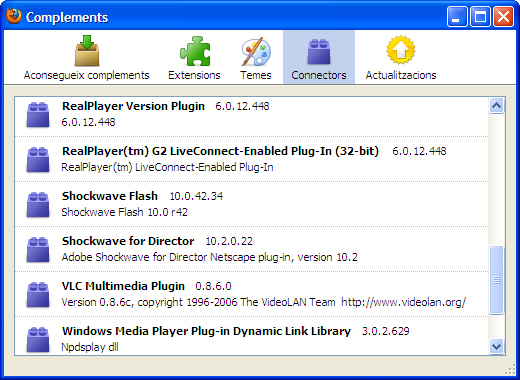
- ic10m3uf6u7_011.jpg
Reproductors Open Source o de codi obert
Tots els reproductors treballats fins ara pertanyen a diferents empreses. En els entorns de Linux i del Programari lliure han sorgit una sèrie de reproductors que en alguns casos poden integrar i millorar les funcionalitats.
- VLC Media player: aquest reproductor ha estat desenvolupat pel projecte Videolan, especialitzat en reproducció de vídeo, també pot fer de servidor. Llegeix la majoria de fitxers de vídeo i streaming. Fins i tot pot llegir els fitxers de vídeo flash. flv sense necessitat d’estar incrustats en una pàgina web.
- 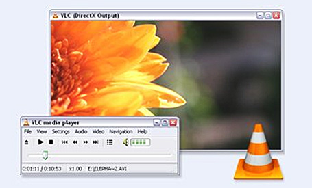
- ic10m3uf6u7_012.jpg
- Mplayer: aquest reproductor també suporta la majoria de fitxers i códecs i es pot trobar en molts sistemes operatius.
- ic10m3uf6u7_013.jpg
Proposta de treball
- Mireu si des del vostre ordinador teniu els principal pluguins per veure vídeo: Quicktime, Real i Windows Media segons els sistemes operatius. Instal·leu aquells que us faltin.
- Podeu mirar d’instal·lar-vos també algun tipus de reproductor específic com el Divx Player o el Videolan.
- Anoteu en el vostre Delicious aquelles pàgines que considereu més interessants.
Vídeo i web 2.0
Objectius: els objectius d’aquesta activitat són:
- Conèixer Youtube com a font de vídeos digitals.
- Saber fer cerques eficients a Youtube per localitzar vídeos.
- Registrar-se a Youtube.
- Conèixer altres publicadors de vídeos.
L’anomenat Web 1.0 està format per webs actuals en què un mitjà acostuma a crear els continguts i els publica perquè tothom els pugui visionar. No hi ha una participació directa. Es produeix l’esquema clàssic dels mitjans: hi ha un emissor i molts receptors. Des de fa alguns anys diverses webs han trencat aquest paradigma, fent que l’usuari passi a ser el protagonista. Així, l’anomenat “web 2.0” és un conjunt de portals on els usuaris són els que creen els continguts i els que marquen les pautes de programació amb els més visitats o els més valorats.
Youtube
Youtube va ser dels primers entorns web que va trencar aquest paradigma. No existeix un únic emissor. Són els propis receptors o clients els que publiquen els vídeos i els continguts associats. Aquest és el nou paradigma del “web 2.0” o les anomenades també Webs socials.
Per poder treballar bé en una web social és important estar registrat, així podreu, a banda de pujar continguts, recordar l’historial que heu visitat, deixar anotats els vostres favorits, llistes de reproducció, correus, etc.
Google va comprar Youtube, per la qual cosa si ja teniu un compte a Google podeu accedir directament des del vostre compte. Avui en dia, Google és el principal subministrador de serveis web de la xarxa, per la qual cosa és recomanable obrir un compte per fer servir totes les seves opcions. Si ho preferiu, podeu fer el vostre propi compte de Youtube.
Per accedir a Youtube ho podeu fer directament a la versió en castellà http://es.youtube.com/ directament a la versió general i configurar-vos els paràmetres volguts. Des de la primera pàgina podeu donar-vos d’alta amb un compte propi.
- 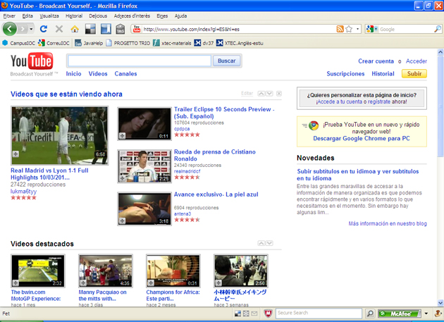
- ic10m3uf6u7_014a.jpg
Crear un compte a Youtube
Per crear el compte seguiu les passes recomanades i us portarà a la vostra pàgina de Youtube.
- 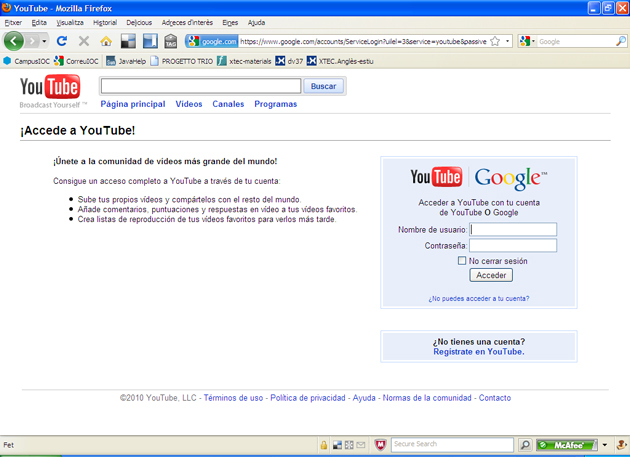
- ic10m3uf6u7_015a.jpg
Podeu fer una mínima configuració del vostre compte posant les dades, fotografia, configuració de les pantalles, etc.
- 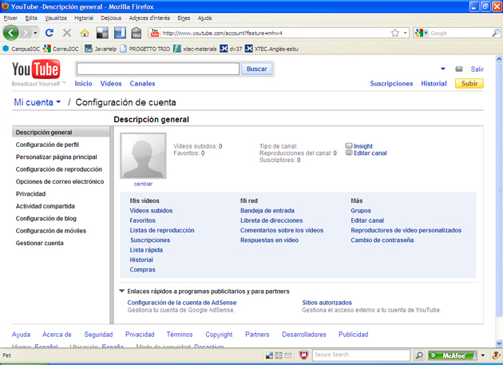
- ic10m3uf6u7_016a.jpg
Cercar recursos a Youtube
La cerca de vídeos i la seva visualització és la funcionalitat principal que ofereix Youtube. La cerca o navegació en Youtube es fa sense necessitat d’estar registrat.
Podeu fer diferents proves de com cercar vídeos relacionats amb els temes que voleu. Probablement en fer una cerca ens sortiran més resultats dels que volem. Llavors podem fer servir les opcions avançades i incloure l’idioma, la categoria i altres paraules amb diferents combinacions. Feu diferents proves per veure quin és el funcionament d’un cercador avançat.
- 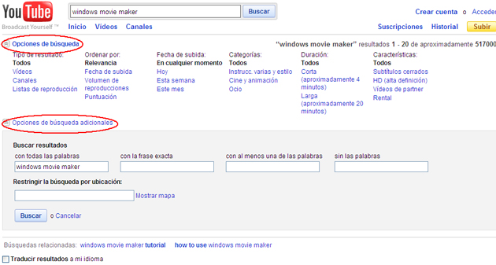
- ic10m3uf6u7_017a.jpg
Podeu fer una primera selecció dels vídeos trobats en una cerca, prement el signe ”+” que surt a l’inferior dreta de la imatge. A aquests vídeos s’afegiran a la llista ràpida que podeu accedir des de la part superior dreta
Si voleu crear llistes de vídeos sobre temes semblants, teniu l’opció de crear llistes de reproducció des de la configuració del vostre perfil. Posteriorment, només haureu de decidir en quina de les llistes afegiu els vídeos més interessants.
- 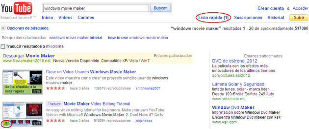
- ic10m3uf6u7_018a.jpg
Els canals de Youtube
Cada usuari té el seu propi Canal de Youtube. El Canal és l’entrada pública a les vostres dades, els vostres vídeos, favorits, contactes, etc. D’entrada, el canal ve predeterminat, però el podeu configurar al vostre gust. A la part superior podreu trobar les informacions més importants relacionades amb cada canal: favorits, llistes, amics, subscriptors, etc.
Si voleu accedir al canal d’un usuari ho fareu fent clic sobre el seu nom d’usuari. El cercador té una pestanya especial per veure els resultats dels canals i també hi ha un espai específic per als canals més visitats a Internet.
Els grups Youtube
Un grup és una bona manera de poder publicar en comunitat i de crear fòrums de debat sobre temes concrets. Per crear un grup només cal anar a Mi cuenta i activar la paraula Grupos i la opció Crear grupos.
Altres publicadors
Els principals webs socials i portals de continguts tenen els seus propis publicadors de vídeo: Yahoo video, Msn Video de Microsoft, MySpaceTV, Facebook, etc.
Podeu trobar altres publicadors de vídeos en els següents enllaços:
http://blip.tv/
http://www.metacafe.com/
http://www.vimeo.com/
http://www.mefeedia.com/
http://www.blinkx.com/
http://www.viewzi.com/search/
Publicar a Youtube
Pujar vídeos a Youtube
Una vegada s’ha creat un compte de Youtube i s’hi ha accedit, per publicar u vídeo, premeu on diu Subir i empleneu les dades que es demanen en la nova finestra emergent. Quan hagueu acabat, premeu on diu Subir un vídeo. Fixeu-vos en les diferents opcions de publicació: privada, pública i etiquetatge.
Entreu a Examinar, localitzeu i seleccioneu el clip en el vostre disc dur i després premeu on diu Subir un vídeo.
El procés de pujada pot trigar uns minuts. Una vegada completat el procés apareix un missatge confirmant la seva finalització.
- 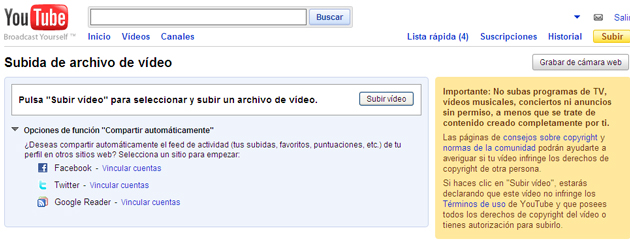
- ic10m3uf6u7_019a.jpg
Compartir vídeos a Youtube
Per visionar el vídeo entreu dins l’espai Mis vídeos i veureu el clip per comprovar que es visualitza correctament: heu d’obrir la petita pestanyeta que es troba al costat d’on diu Cuenta (número 1 de la foto) i en el menú desplegable premeu on diu Mis vídeos (número 2 de la foto). Així mateix també podeu acudir directament al vostre canal prement el vostre identificador que surt al cantó de Cuenta.
Finalment, per informar a altres persones de l’adreça on teniu penjat el vostre clip, haureu de copiar la URL que trobareu al marge esquerre superior de la web de Youtube, tal i com s’indica en la foto, i enganxar-la on s’escaigui.
També podeu fer servir les diferents opcions de compartir que trobareu a la part inferior del vídeo. Per posicionar-la a les webs o marcadors socials on tingueu compte com Delicious.
Edició de vídeos on-line
Eines per pujar i editar vídeos i imatges en línia
Dins l’entorn d’Internet hi ha un seguit d’espais webs que permeten que els usuaris editin vídeos online dintre dels seus navegadors, sense la necessitat instal·lar un programari específic en les seves computadores. Aquests llocs d’edició de vídeo presenten generalment una gran facilitat d’ús, la qual cosa fa molt senzill realitzar edició bàsica i avançada fins i tot per a aquelles persones que no són expertes. Molts d’aquests llocs permeten als usuaris publicar els seus vídeos editats en qualsevol pàgina web, incrustat en un reproductor de vídeo. tanmateix, només uns pocs permeten als usuaris guardar els seus vídeos editats en les seves computadores. Sovint, grans comunitats de vídeo floreixen al voltant dels llocs d’edició de vídeo online, permetent als seus usuaris ‘remixar’ les produccions dels altres i crear nous vídeos.
Moltes de les eines d’edició de vídeo online permeten als usuaris editar no només els seus propis vídeos o els vídeos que pertanyen a la seva comunitat, també vídeos produïts per altres usuaris que estan situats en els principals llocs de la web per compartir vídeo.
Els diferents editors online que hi ha a la web es caracteritzen pels paràmetres següents:
- Formats de l’arxiu d’entrada: els formats de vídeo suportats que poden ser editats online.
- Formats de l’arxiu de sortida: en quin format d’arxiu poden ser guardats els vídeos editats online.
- Suport per incrustar: la possibilitat d’insertar el vídeo editat a qualsevol pàgina.
- Upload des de HD, Mòbil o URL: si els vídeos poden ser pujats des del disc rígid, telèfon mòbil o URL.
- Grandària màxima del vídeo: la grandària màxima del vídeo que pot ser pujat.
- Efectes de transició: la capacitat d’agregar efectes de transició per separar diferents vídeo clips.
- Doblatge d’àudio: l’opció per editar àudio, reduir el soroll i agregar efectes especials.
- Titulació: la possibilitat d’agregar títols i subtítols dintre del vídeo.
- Efectes especials de vídeo: la disponibilitat d’efectes especials de vídeo que poden ser aplicats al mateix.
- Guardar vídeo en l’escriptori: la capacitat de guardar en la computadora el vídeo editat.
Busqueu per Internet llocs que permetin pujar vídeos i editar-los on-line.
L'entorn de treball d'un programa d'edició
El primer que hem de tenir clar a l’hora de fer una edició, és saber si el nostre equip informàtic pot suportar aquesta feina i en quina qualitat volem treballar. Està clar que a més qualitat més prestacions ha de tenir l’entorn de treball. No és el mateix editar un vídeo de 2 minuts a 320 × 240 per penjar-ho a la web, que fer una edició de 20 minuts a 720 x 576 i no parlem ja en alta definició, però això , per a les escoles, encara ens queda una mica lluny.
El material indispensable seria:
- Una càmera de vídeo, si és possible, amb entrada i sortida de vídeo. Totes les càmeres tenen sortida de vídeo, es a dir les imatges poden ser capturades per l’ordinador, però no totes les càmeres tenen entrada, això vol dir la possibilitat que un cop hem fet l’edició amb l’ordinador, poden retornar la pel·lícula a la càmera i guardar-la com a màster.
- Un ordinador, hi ha un apartat especial per parlar d’aquest tema.
- Un programa d’edició.
- Un DVD, CD, disc dur, cinta… per fer una copia del màster (la pel·lícula ja editada).
- 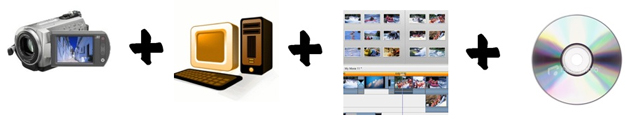
- ic10m3uf6u7_020a.jpg
L'equip informàtic
Avui en dia la majoria dels ordinadors nous ja vénen preparats per tenir una estació d’edició de vídeo digital domèstica. Però us podeu trobar amb diferents tipologies d’ordinadors, per això aquí teniu una llista dels components bàsics:
- Un ordinador amb un sistema operatiu: Microsoft Windows XP Home Edition o Windows XP Professional, Mac Os X o Linux.
- Un bon processador mínim de 600MHz o 1’5 GHz per treballar amb comoditat.
- Suficient memòria RAM, mínim 256 megues. Si es pot ampliar més millor ja que els programes d’edició de vídeo realitzen operacions molt complexes. Ideal 1 giga.
- Un disc dur ampli i ràpid. Penseu que 1 segon de vídeo pot ocupar 30 megues i no parlem de HD. Mínim 20 gigues. És recomanable tenir un disc dur extern per guardar tots els projectes de vídeo, d’aquesta forma buidem els disc dur de l’ordinador un cop acabat el projecte.
- Una targeta de vídeo digital amb entrada i sortida de vídeo mitjançant connexions tipus digital (Fireware,I-Link).
- Una targeta gràfica que pugui suportar vídeo.
- Un perifèric lector/gravador de CD o DVD.
- Un programa d’edició de vídeo.
Un cop escollit el programa d’edició, cadascun d’ells porta informació sobre requisits mínims del sistema. En cas de dubtes està bé donar una ullada.
Programes d'edició digital
De la mateixa manera que els programes d’edició de textos van acabar essent una eina assequible pels usuaris en general, el mateix està passant amb els programes d’edició de vídeo. A un nivell senzill, pràcticament tots els programes tenen les mateixes funcions, i el més important és tenir clar els aspectes fonamentals, esmentats abans, de qualsevol edició audiovisual. Avui en dia l’oferta és tan amplia i variada, que no hem volgut centrar-nos en un editor concret, com es feia en cursos anteriors, i per això us donen les eines perquè cadascú treballi amb l’editor que més s’apropi al tipus de producció que vol desenvolupar i a les característiques pròpies de l’etapa on es treballa.
A l’hora d’escollir l’editor s’ha de tenir present aquestes consideracions:
- Que sigui fàcil d’usar.
- El tipus de producció que voleu fer. No tots els editors poden realitzar produccions complexes.
- Que s’adapti a les característiques i potència de l’ordinador amb el qual voleu treballar. Hi ha programes que requereixen una màquina més potent.
- Quin és el pressupost econòmic. Hi ha una gran varietat, des de programes gratuïts fins a programes professionals.
- 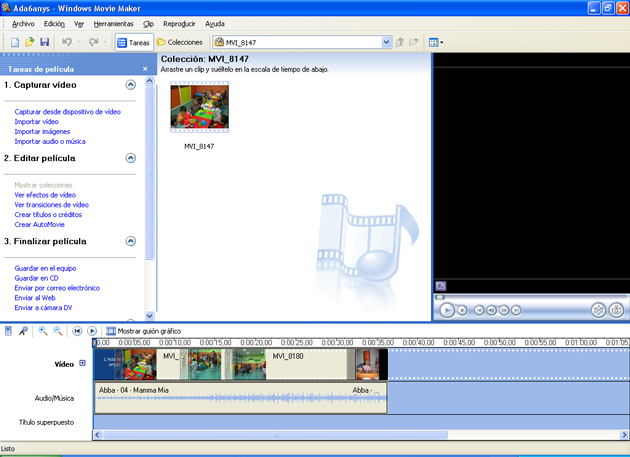
- ic10m3uf6u7_021a.jpg
Tipologies de programes
Actualment, l’edició de vídeo es pot dur a terme a través de dos tipus diferents de programes, en funció de si es tracta d’un programari que s’executa a l’ordinador de l’usuari, on està instal·lat, o si aquest és accessible en línia a través d’Internet.
- Mitjançant un programa d’edició, com s’ha fet tota la vida. En aquest cas aquí sota teniu una taula de software, la majoria gratuït o bé que teniu a les escoles.
- Darrerament estan apareixent molts programes web 2.0, on l’edició es pot realitzar on-line dins de la pròpia web. Aquests programes tenen certes limitacions, però són una bona eina per editar les captures que es fan amb les càmeres de fotos o mòbils i de les quals es vol obtenir un resultat modest (vegeu l’activitat 3).
Programari específic d'edició
- 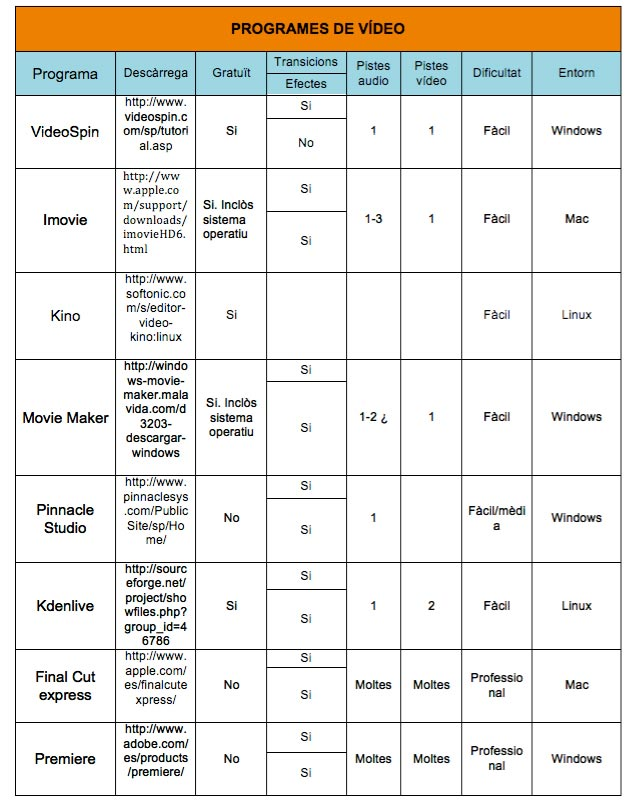
- ic10m3uf6u7_022.jpg
En aquest curs no ens volem centrar en un programa d’edició específic, avui en dia l’oferta digital és tant amplia i han proliferat tants programes d’edició que hem considerat que cadascú pot escollir el programa que més s’adapti a les seves necessitats.
Nosaltres en aquest curs us donarem les claus per treballar l’edició en un sentit més ampli. Des del punt de vista educatiu i valorant el llenguatge audiovisual en tots els seus aspectes. Volem que us animeu a treballar i que incorporeu la producció audiovisual en les vostres tasques professionals.
Com que no podem tractar tots els programes d’edició, hem escollit alguns que poden ser d’una gran ajuda. En aquesta selecció hem considerat que fossin programes:
- Gratuïts.
- Amb oferta d’alternatives a totes les plataformes: PC, MAC , LÍNUX i WEB 2.0.
- Amb una interfice fàcil d’usar i intuïtiva a nivell visual.
- Amb manuals i vídeotutorial fàcils de trobar.
Windows Movie Maker
- ic10m3uf6u7_023.jpg
Plataforma: PC.
Preu: gratuït, per als usuaris del Windows.
Baixada: http://www.microsoft.com/spain/windowsxp/downloads/updates/moviemaker2.mspx
Tutorial: http://www.ayudadigital.com/video/como_capturar_editar_moviemaker.htm. Més complert en PDF: http://mosaic.uoc.edu/pdf/Manual_Basico_de_Windows_Movie_Maker.pdf.
Pinnacle Studio
- 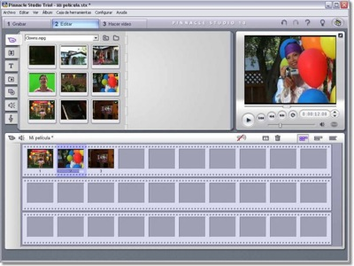
- ic10m3uf6u7_024.jpg
Plataforma: PC/MAC.
Preu: des de 59 €.
Tutorial: http://www.xtec.cat/audiovisuals/sav/jt0506/studio8/studiocaptura.htm
Vídeotutorial: Pinnacle Studio 8 Bàsic.
Vídeotutorial: Pincle Studio 11 Aprofundir.
Imovie
Plataforma: MAC.
Preu: gratuït amb el sitema operatiu d’Apple.
Baixada: Versió ImovieHD 6 http://www.apple.com/support/downloads/imovieHD6.html.
Versió Imovie HD 8 Sistema Operatiu Leopard 10.5.
Podcast: Subscriure’s a Itunes/Apple Store/podcast Tazzito.com Una bona col·lecció de tutorials d’Imovie 06 i 08.
Vídeotutorial Imovie8: http://www.apple.com/es/ilife/tutorials/#imovie.
Kdenlive
- 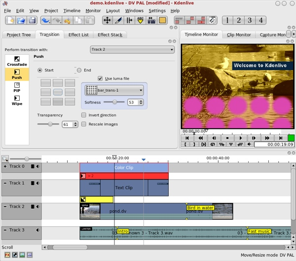
- ic10m3uf6u7_025.jpg
Plataforma: LÍNUX.
Preu: Gratuït.
Baixada: http://www.kdenlive.org/
Suport XTEC: http://linkat.xtec.net/portal/content/view/142/30/
Tutorial:http://es.wikibooks.org/wiki/Kdenlive/Guía_rápida#La_ventana_de_Proyecto
Vídeotutorial: Primera part
Vídeotutorial: Segona part
Photobucket
Plataforma: WEB 2.0.
Preu: Gratuït.
Baixada: http://photobucket.com/
Tutorial: http://www.slideshare.net/franwiv/tutorial-photobucket
Proposta de treball
Escollir el programa d’edició.
Segons el sistema operatiu amb què treballeu, feu una ullada als tutorials i escolliu el que s’adapti millor a les vostres necessitats. A partir d’aquest moment us suggerim que sempre treballeu amb el mateix programa i tutorial.
Importació d'enregistraments (captura)
Enregistrament i captura
Abans de començar a editar hem de preparar les configuracions bàsiques per treballar amb fitxers de vídeo digital.
- Tipus d’edició de vídeo digital: Video for Windows (Avi), Quicktime (Mov).
- Sistema de vídeo: NTSC (Americà), PAL (Europeu).
- Fotogrames: 25 imatges segon (més qualitat), 15 imatges segon (menys qualitat).
- Resolucions: 764×576 (recomanable), CD 640×480, WEB 320×240, 160×20.
- Pantalla: standar 4/3, panoràmica o HD 16/9.
Un cop tenim tot el treball enregistrat, comencem el procés d’edició. Aquest procés consta de tres parts fonamentals: la captura, la línia de temps o edició i l’exportació.
Amb qualsevol càmera de vídeo, les seqüències sempre estan arxivades dins d’aquesta. Sigui quin sigui el sistema en què les seqüències hagin estat emmagatzemades, abans d’editar hem de posar en comunicació la càmera amb l’ordinador. Els dos sistemes de comunicació més utilitzats són els ports USB 2.0 i firewire. En els ports USB cal assegurar-se que la transferència de captura és correcta i contínua. Penseu que esteu treballant amb imatges en moviment no amb imatges fixes, per tant, qualsevol port USB no serveix.
Una bona part d’equips utilitzen el port firewire, ja que pot enviar la informació més ràpida i estable. Per poder fer les captures amb aquest port, l’ordinador ha de tenir una targeta firewire i la càmera la connexió Ilink.
-

- ic10m3uf6u7_026.jpg
Quan l’ordinador realitza una captura de vídeo, està codificant una gran quantitat d’informació, una imatge de 768 x 576 (mides Pal) a una resolució de 24 bits de color i 25 imatges per segon ocupa uns 30 MB cada segon o si voleu 115.200 MB per hora. Per això no és estrany que quan es treballa amb vídeo digital, els programes utilitzin formats per generar els fitxers.
Formats de vídeo
- 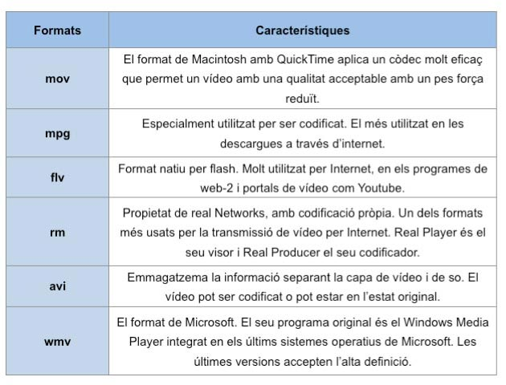
- ic10m3uf6u7_027.jpg
A banda dels formats, els vídeos també es poden codificar perquè ocupin menys grandària. Per fer-ho utilitza uns códecs:
- 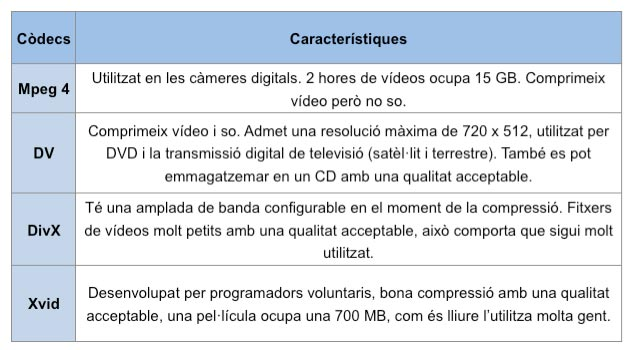
- ic10m3uf6u7_028.jpg
Tant els formats com els códecs han de resoldre dues qüestions, comprimir les dades en temps real per enviar-les al disc dur i descomprimir-les a una velocitat suficientment ràpida perquè l’ordinador les pugui reproduir a 25 fotogrames per segon. Normalment aquest procés s’encarrega la targeta la capturadora i el programa d’edició.
- Orientació
Per sortir del pas: http://www.linuca.org/body.phtml?nIdNoticia=148
Per saber més: http://www.mundodivx.com/codecs/codecs.php
Procediment per capturar seqüències de vídeo
- Connecteu la càmera de vídeo a l’equip informàtic amb el cable adient, recorda USB-2 o Firewire.
- Obriu el programa d’edició.
- En alguns programes, automàticament, una finestra t’indica que la càmera està ben connectada i per tant pots realitzar la captura o importació d’imatges.
- Si no reconeix la càmera automàticament, en el menú del programa o finestra corresponent obriu el dispositiu de captura.
- En una finestra has de seleccionar la càmera des d’on vols fer la captura. Si no apareix, pot ser que passi alguna d’aquestes quatre coses: la càmera no està encesa, no està en mode player, que el cable no està ben connectat i la pitjor de totes, que el model de la càmera sigui incompatible amb el programa d’edició.
- Creeu una carpeta i una ubicació per guardar les captures i tots els arxius relacionats amb el projecte. Molt important tenir tot el projecte en una sola carpeta, ja que d’aquesta forma ens evitarem tenir problemes i esborrar el projecte un cop acabat.
- Trieu la qualitat i dimensió de la captura. Normalment es fan en DV PAL. En un treball escolar no sempre està clar on anirà a parar el nostre vídeo sí a Internet, a un DVD, a una cinta… Per tant és millor guardar-ho en la màxima qualitat possible, perquè comprimir l’arxiu partint d’una bona qualitat no hi ha cap problema, però mai podreu millorar la qualitat del màster.
- A les preferències de les captures podem escollir una captura automàtica o manual. El més fàcil és fer una captura automàtica (sí el programa té aquesta opció) i després ja anirem esborrant o tallant els clips que no ens interessin.
- Procureu que les captures no siguin molt llargues, menys d’un minut, a no ser que sigui una seqüència sencera, ja que moure arxius molt pesats comporten una major dificultat per l’edició. Seria ideal tenir un clip per a cada canvi de plànol o seqüència.
- Feu la captura des de la finestra corresponent. A mesura que feu la captura, veureu les seqüències en forma de clip.
- Molt important, quan acabeu o mentre feu les captures no us oblideu d’anar guardant el vostre projecte, per no perdre el material.
- Orientació
- Arxius d’imatge: .bmp, .dib, .emf, .gif, .jfif, .jpe, .jpeg, .jpg, .png, .tif, .tiff i .wmf
- Arxius de vídeo: .asf, .avi, .m1v, .mp2, .mp2v, .mpe, .mpeg, .mpg, .mpv2, .wm i .wmv
- Arxius d’àudio: .aif, .aifc, .aiff, .asf, .au, .mp2, .mp3, .mpa, .snd, .wav i .wma
Proposta de treball
Escolliu un dels 4 programes d’edició que us suggerim, agafeu el tutorial corresponent i intenteu a fer diferents tipus de captura:
- Dues fotografies d’Internet o fetes des d’una càmera de fotos.
- Dues seqüències de vídeo de 5 segons.
- Dos arxius de música o efectes sonors.
De cadascun dels arxius heu d’observar:
- El format de la importació.
- Les mides dels arxius d’imatge. Quan importeu un arxiu de mides petites i el voleu adaptar al vostre projecte, aquest ho fa ampliant el píxel. Per evitar problemes és recomanable importar arxius d’imatges grans, que s’adaptin a la pantalla: 720 x 572.
- El pes de l’arxiu.
Importació en els diferents programaris específics
Vegeu, a continuació, la manera en què es pot procedir, en cada tipus de programari específic, per importar fitxers de vídeo i poder-los tractar, així, dintre del programari específic.
- Windows Movie Maker:
- En format web: http://www.ayudadigital.com/video/como_capturar_editar_moviemaker.htm. També podeu consultar: http://www.terra.es/tecnologia/articulo/html/tec2837.htm
- Pinacle Studio:
- En format vídeotutorial Studio 8: Minut 0:30- 1:05
- En format vídeotutorial Studio 11: Minut 3:00- 5:00
- Kdenlive:
- En format web: http://es.wikibooks.org/wiki/Kdenlive/Guía_rápida#La_ventana_de_Proyecto
- En format vídeotutorial: Minut 00:00-1:18
Edició d'una seqüència de vídeo
En què consisteix l’edició?
- Orientació
- Per tall directe.
- Per transicions.
L’edició per tall directe és el recurs més utilitzat a l’hora d’anar canviant els diferents plans. És el signe de puntuació bàsic del llenguatge audiovisual. És la transició el·líptica més senzilla i que dóna dinamisme al vídeo. El sistema ideal de pas d’una escena a una altra és aquell que passa desapercebut per a l’espectador, creant l’il·lusió de continuïtat natural.
L’edició per tall condueix l’acció suprimint tot allò que no és necessari per al desenvolupament del relat i fan comprensible, a l’espectador, l’evolució espai-temporal sense cap explicació externa a la pròpia informació audiovisual.
En l’edició per tall, és on es fan més evidents els conceptes de continuïtat, ràcord, direccionalitat i salt de l’eix d’acció.
L’edició per transicions consisteix a aplicar efectes en finalitzar un clip per enllaçar-lo amb el següent.
Comencem a editar...
Una vegada feta la captura o importació de vídeos, hem de començar a tallar i ordenar els clips (o vídeos individuals) a la barra d’edició.
A un costat del programa, teniu totes les vostres captures. Segur que heu capturat moltes més imatges de les que necessiteu, cap problema mentre tingueu espai en el vostre disc dur.
- 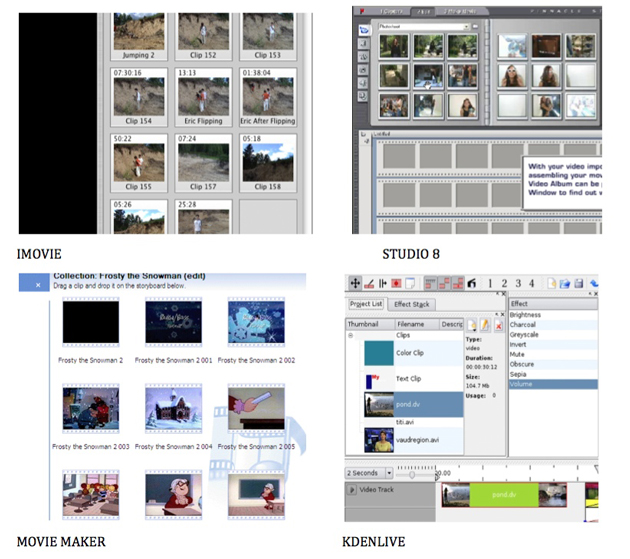
- ic10m3uf6u7_029a.jpg
Ara heu de començar a selecionar, ordenar i talllar els clips que utilitzareu en la vostra producció.
Els aspectes que cal tenir presents abans de col·locar els clips a la barra d’edició són:
- Feu una bona selecció de clips i elimineu els que no serveixen.
- Ordeneu o agrupeu en carpetes els clips de la finestra de captures. L’ordre evita mals de caps a l’hora de trobar els clips i agilitza l’edició. Si podeu ordenar les captures per seqüències millor.
- Si no esteu segurs si utilitzareu un clip o no, deixeu-lo, sempre estareu a temps d’esborrar-lo. Es perd força temps si heu de tornar a fer la captura, per tant més val guardar-lo.
- Si el programa ho permet, duplica el clip quan hagis de fer proves, especialment efectes. Experimenteu sobre un clip i deixa l’altre guardat per si de cas.
- Abans de tallar el clip, feu-hi una ullada per escollir el tros més adient. Procureu que no sigui llarg, 2-3 segons i que respecti les normes abans esmentades en el mòdul de llenguatge audiovisual.
- Quan en un mateix clip hi ha diferents plans, intenteu dividir-los abans de tallar definitivament el clip. És a dir, sovint trobareu que en un clip de 15 segons hi ha informacions diferents que cal separar abans d’editar. Un cop separats podeu editar-los normalment.
- Segons quin programa utilitzeu, el clip el pots tallar abans de col·locar-lo a la barra d’edició, especialment si és molt llarg.
- Observeu en el tutorial corresponent com es fa un tall i quines possibilitats ofereix el programa.
- Arrossegueu el clip a la barra d’edició i col·loqueu-lo en el lloc adient. Intenteu editar seguint l’ordre del relat, reportatge…
- Si us heu descuidat un clip, la majoria de programes permeten insertar el clip, respectant l’ordre posterior sense modificar l’edició. En els programes més professionals aquesta opció l’heu de fer mitjançant l’opció del menú Insert.
Recordeu que:
- Cal ser ordenat per trobar amb facilitat els clips seleccionats.
- Els clips i les imatges que heu importat al teu projecte es queden en la ubicació original. En la finestra de clips veureu la referència. Si esborreu o canvieu d’ubicació el clip original, desapareixerà de la finestra de captures i no es visualitzarà.
Tallar els clips o com donar-los els punts d'entrada i sortida
Els aspectes que cal tenir en compte abans de donar els punts d’entrada i sortida als clips són:
- Feu el tall al moment en què l’acció queda establerta. Eviteu les cues de tall que deixen passar més temps d’acció innecessari.
- Els plans generals requereixen un major temps de permanència, ja que donen una major informació. Al voltant de 3 segons.
- Els plans tancats requereixen una menor informació i per tant un menor temps de permanència. Al voltant de 2 segons.
- Si esteu descrivint una acció determinada, deixeu que aquesta acabi. Quan és molt llarga és pot fer un encadenat o utilitzar l’efecte “ràpid o lent” per escurçar-la o relentizar-la. Aquest efecte no està disponible en tots els programes.
- Per fer el seguiment d’una conversa utilitzeu plans de confrontació de personatges, on alternament s’utilitzen plans curts i de menys durada de cada personatge. Aquest recurs fa augmentar la tensió i facilita el seguiment d’un diàleg.
- Eviteu els empalmaments entre plans que s’assemblin molt, quan tracta d’una mateixa persona o objecte.
- Si s’han d’inserir imatges dins d’una altra imatge, vigileu que aquestes no siguin massa petites, especialment si penseu penjar el nostre vídeo a una pàgina web o realitzar un videocast, ja que aquesta no es veuria. Menys d’un 40% de la seva mida original dóna problemes per visionar-ho.
- Els talls entre subjectes en moviment en la mateixa direcció suggereixen continuïtat d’acció, direcció, persecució…
- Els talls entre direccions divergents transmeten la sensació de separació o expansió.
- És pot produir un desequilibri de plans quan l’aire que envolta el personatge del primer pla és diferent de l’aire que envolta el personatge del segon.
- Quan es produeixen salts de continuïtat o ràccord, es poden utilitzar plans de recurs, per tal de solucionar el problema de continuïtat.
- Quan un personatge apareix en plans successius mostrant moviment oposats, podeu evitar efectes subjectius introduint un pla intermedi que mostri una imatge de front.
- Utilitzeu les imatges més impactants al començament per tal d’enganxar a l’audiència.
- Feu servir plans de recurs o imatges fixes. Aporten molta informació i enriqueix el vídeo.
- No poseu plans gratuïts i si teniu dubtes respecte un pla no el poseu.
Procediment per editar els clips
No hi ha una manera universal d’editar. Cadascú ha de trobar el seu procediment en funció del programa que utilitzi. Aquí teniu una base d’orientació que us pot ajudar realitzar una primera edició.
- Primer de tot cal determinar quina importància té la banda sonora en la nostra producció. Si volem editar un vídeo seguint les pautes de la música, primer de tot haurem de col·locar aquesta en la barra d’edició, per determinar la durada i el ritme de l’edició. Si la banda sonora no té cap importància, deixarem aquesta per més endavant.
- Agrupar els clips en la finestra de captures, creant carpetes o blocs.
- Agafar la primera seqüència. Ajustar l’entrada i sortida, i arrossegar-la fins a la línia d’edició o de temps.
- Per poder editar amb comoditat, ajusta la barra d’edició, de tal forma que la indicació del temps estigui de segon en segon, es a dir: 1,2,3,4…
- Plantejar-se si és adequat aplicar transicions entre clips o efectes en els diversos clips.
Per editar un grup d’imatges els passos que cal seguir són:
- Aneu al principi de l’edició i sobre una imatge fixa, un color o una seqüència, afegir el títol del vídeo.
- Col·loqueu una transició entre el títol i el primer clip del vostre vídeo. Si el que mana és la banda sonora, aprofiteu un canvi de ritme per ajustar el principi o final del títol.
- Col·loqueu el segon grup d’imatges.
- Fer una transició entre el primer i segon grup.
- Si cal aplicar algun efecte, aquest es pot fer al final o aplicar-ho sobre el clip després de haver-lo col·locat en la barra d’edició.
- De la mateixa forma que heu fet el títol d’entrada i els crèdits (títols) finals del vídeo.
- Per acabar el vídeo està bé fer-ho amb una fosa en negre.
- Arrossegueu la banda sonora a la línia de música i ajusta aquesta a la durada de les imatges, deixant un segon per realitzar una fosa de so.
- Afegiu els efectes sonors.
- La majoria de programes permeten la possibilitat d’inserir una imatge entre dos clips ja editats, d’aquesta forma es respecta el treball realitzat fins ara, només cal ajustar de nou els efectes sonors.
- Previsualitzeu la pel·lícula i comproveu que tot és correcte.
- Molt important, no us oblideu de guardar el projecte cada 5 minuts.
Edició de seqüències de vídeo en programaris específics: la línia del temps
Per conèixer específicament com editar la línia del temps i seqüències de vídeo en els diversos programaris, consulteu el que us interessi a continuació:
- Windows Movie Maker:
- En format web: http://www.ayudadigital.com/video/como_capturar_editar_moviemaker.htm. També podeu consultar: http://www.terra.es/tecnologia/articulo/html/tec2862.htm
- Pinacle Studio:
- En format vídeotutorial Studio 8: Minut 0:34- 2:12
- En format vídeotutorial Studio 11: Minut 0:34- 1:37
- Kdenlive:
- En format vídeotutorial: Minut 0:20- 4:50
Muntatge de clips
Muntatge dels clips
Un muntatge és tot un seguit de clips, que prèviament han estat tallats o editats.
Normalment, quan realitzem la captura d’un clip sempre agafem més imatge de la que necessitem, per tant hem de retallar el clip original mitjançant la insersió d’uns punts (IN-OUT), donant-li un punt d’entrada (IN) i un punt de sortida (OUT). Quan parlem d’aquest punts fem referència a l’inici o final d’un pla que serà editat.
També és possible que en una mateixa captura tinguem diferents plans que ens interessen. En aquest cas, per no eliminar parts que ens interessen, podem dividir el clip original en diferents parts, o copiar i enganxar el clip vàries vegades si el programa no ens permet dividir el clip original.
Però encara que tingueu el millor ordinador i el programa d’edició més adient, no serveix de res si no teniu clar que voleu aconseguir amb la vostra producció. Sovint les idees més senzilles i curtes són les millors.
A l’hora d’editar heu de tenir molt clar:
- El públic a qui va dirigit la vostra producció.
- L’ordre dels plans i la seva durada en funció del gènere audiovisual: reportatge, entrevista, musical, animació…
- La durada. Més val un vídeo curt i no superar els 5-8 minuts. Especialment si el voleu presentar a concursos nacionals o internacionals.
- Els punts de tall. No allargar el punt d’entrada i sortida del clip.
- Manteniment de la continuïtat del vídeo i l’àudio.
- Orientació
Segons l’enquadrament els muntatges poden ser:
- Muntatge analític: Enquadraments propers i de curta durada. S’utilitza per vídeos d’acció i vídeoclips.
- Muntatge sintètic: Enquadraments oberts amb una bona profunditat de camp i major durada. Donen una visió més descriptiva de la realitat. Potencien els moviments de càmera i dels personatges.
Segons la durada del pla els muntatges són:
- Muntatge narratiu: Explica els fets, ja sigui cronològicament o fent salt al passat o futur.
- Muntatge expressiu: Quan el ritme de l’acció determina el muntatge, ràpid en els moments d’acció i lent en els moments dramàtics. Produeixen un major impacte sobre l’espectador.
- Muntatge ideològic: Quan destaquem les emocions mitjançant símbols, gestos…
- Muntatge creatiu: Quan no es té en compte la cronologia i adquireix més importància el ritme, l’acció o la bellesa de les imatges.
- Muntatge poètic: Quan intentem crear una obra poètica, causant reaccions sobre l’espectador. Té clarament una intenció expressiva.
- Muntatge vídeoclip: Els vídeo clips i els muntatges plublicitaris han posat de moda aquest tipus de muntatge. Els plans són molt curts, amb efectes de tota mena i sovint el so marca el ritme de l’edició.
Si voleu saber més sobre aquest aspecte aquí teniu una adreça web que parla dels diferents tipus de muntatge i mostra alguns exemples: http://cinemasurlepont.wordpress.com/2008/06/04/tipos-de-montaje/
Transicions i efectes
- Orientació
Per explicar el llenguatge de les transicions podem fer el paral·lelisme ortogràfic que serà de fàcil comprensió. A nivell ortogràfic, la transició és com una coma, un punt o un punt i coma, és a dir una pausa, per tal de traspassar d’una informació a una altre de forma suau. A nivell d’edició de vídeo, una transició s’utilitza quan volem fer una pausa per continuïtat, de forma i manera que contribueix al seguiment de la mateixa acció.
Les transicions sempre s’utilitzen per indicar alguna cosa a l’espectador: un salt de temps, espai o narració. En funció de la durada i tipus de transició advertirem més o menys a l’espectador d’algun canvi important. Una transició llarga seria com un punt i apart i una transició curta i senzilla com una coma, buscant de nou el símil ortogràfic.
Els tipus de transicions són:
- Per encadenat: Consisteix en veure com una imatge s’esvaeix mentre una segona imatge apareix. Aquest tipus de transició és la més suau i un de les més expressives i indica passos de temps no massa llargs. També l’encadenat permet dissimular errades de ràccord entre dues imatges i suavitza de forma notable la transició.Quan l’encadenat es perllonga en el temps i les imatges romanen mesclades sobre la pantalla obeeix, generalment, a una finalitat diferent. Aquesta tècnica s’anomena sobreimpressió i consisteix en mesclar imatges que es desenvolupen en espais o temps diferents per configurar una nova realitat (imaginació, deliri, irrealitat, somni…).
http://static.photobucket.com/player.swf?file=http://vid332.photobucket.com/albums/m340/cursvideo/encaden.flv - Per fosa: Consisteix en la gradual desaparició d’una imatge fins deixar el quadre de color. És un recurs clàssic de transició, especialment per començar o acabar un vídeo, però també s’utilitza per separar temporalment seqüències o escenes que representen situacions distanciades en el temps. Aquesta transició dóna una sensació de salt temporal més acusada que l’encadenat.La imatge següent apareix a partir del color a què es va fondre l’anterior.
http://static.photobucket.com/player.swf?file=http://vid332.photobucket.com/albums/m340/cursvideo/fosa.flv - Per desenfocat: Consisteix en desenfocar una imatge i passar a la següent de desenfocat fins a focus. És un recurs que s’aplica per indicar passos de temps curts o canvis d’escenari. El desenfocament en visió subjectiva és un recurs expressiu que serveix per indicar una pèrdua de consciència del personatge, i en visió subjectiva, en zoom cap al front, s’ha emprat per iniciar una volta enrere en el temps per passar a veure els records del personatge.
http://static.photobucket.com/player.swf?file=http://vid332.photobucket.com/albums/m340/cursvideo/desenfocat.flv - Per escombrat: Consisteix en un gir ràpid de la càmera que produeix un efecte visual semblant a una cortina que passa tant ràpid que no dóna temps a veure de què és tracta. S’utilitza per passar d’un espai a un altre de forma instantània. Aquest efecte no és un efecte digital i s’ha de produir en la fase d’enregistrament.
- Per cortines: Consisteix en la utilització de formes geomètriques o efectes per donar pas a noves imatges. És tracta d’una tècnica digital en la qual la segona imatge envaeix la primera. Poden tenir formes molt variades. S’utilitza normalment per marcar un canvi d’escenari. Les possibilitats que aporten els vídeos digitals, fan que cada vegada hi hagi un ventall més ampli d’efectes i cortines de tota mena.
http://static.photobucket.com/player.swf?file=http://vid332.photobucket.com/albums/m340/cursvideo/escombrat.flv
Els aspectes que cal tenir presents en l’edició de les transicions o efectes són:
- No abusar mai de les transicions i efectes. Col·locar-les quan siguin necessàries.
- Una transició o efecte es pot fer servir per tapar alguna errada, especialment de continuïtat. Però quan un vídeo té moltes transicions o efectes, indica que hi ha moltes errades per ocultar.
- En una edició s’han d’escollir 3 ó 4 tipus de transició. Al principi hi ha una certa tendència a jugar. Procurar no fer un mostrari de les possibilitats del programa.
- La durada dels dissolvers o encadenats han de ser curtes (12-17 frames), si no volem donar cap simbolisme especial. En termes ortogràfics seria com una coma.
- La durada de les cortines i altres transicions poden ser una mica més llargues (15-24 frames). En termes ortogràfics és com un punt.
- Utilitzar transicions curtes i lleugeres si no volem cridar l’atenció a l’espectador.
- Utilitzar transicions més espectaculars i llargues quan vulguem passar a un altre tema d’una forma clara.
- La durada dels clips on volem realitzar la transició sempre ha de ser una mica més llarga, per tal de no escurçar les imatges originals.
- Quan es fa una transició o efecte entre dos clips, aquests han de tenir material suficient per davant i darrera, per poder fer la feina. Es a dir, el primer clip ha de tenir un segon com a mínim en la cua del clip i el segon clip ha de tenir un segon per davant del clip. El programa d’edició no deixarà fer l’edició o marcarà error quan no de disposa material suficient per fer la transició.
El procediment per aplicar les transicions és el següent:
- Localitzeu la finestra on es troben les transicions.
- Indiqueu o modifiqueu la durada de la transició.
- Assegureu-vos que teniu imatge suficient per aplicar la transició. Si apliqueu una transició molt llarga és possible que us quedeu sense les imatges originals. Si no teniu espai, una solució seria insertar un clip estàtic molt curt o bé relentitzar una mica la imatge.
- Arrossegueu la transició entre les dues seqüències. Recordeu que abans o després heu d’indicar el temps de la transició.
- Comproveu que ha quedat correcte i no hi ha salts d’imatge o continuïtat.
El procediment per aplicar els efectes és:
- Localitzeu la finestra on es troben els efectes.
- Seleccioneu l’efecte i la imatge.
- Previsualitzeu l’efecte per comprovar que us agrada.
- Arrossegueu l’efecte sobre el clip dins l’imatge de la línia de temps.
- Segons el programa que utilitzeu, podeu afegir més d’un efecte.
Aspectes que cal tenir presents per assolir un bon ritme en la seqüència del vídeo
- Els plans descriptius requereixen un major temps de permanència, ja que domen una major informació. Al voltant de 3 segons.
- Els plans expressius requereixen d’una menor informació i per tant un menor temps de permanència. Al voltant de 2 segons.
- Els plans narratius, varien de durada en funció de la narració.
- Explicacions curtes i clares. No abuseu de la veu en off. Intercaleu veu i música sempre que sigui possible. El temps de veu i música ha d’estar equilibrat. Un 50% és correcte. Més d’un 75 % de veu pot arribar a cansar al receptor.
- Si la música és la que marca la transició entre els plans, aprofiteu els canvis de ritme d’aquesta per marcar els diferents temes o apartats del vídeo.
- Per fer el seguiment d’una conversa utilitzeu plans de confrontació de personatges on alternament s’utilitzen plans curts i de menys durada de cada personatge. Aquest recurs fa augmentar la tensió i facilita el seguiment d’un diàleg.
- Utilitzeu les imatges més impactants al començament, per tal d’enganxar a l’audiència.
- Si teniu la sensació que un pla és massa llarg, talleu-lo.
- Un cop acabada l’edició, visioneu el vostre treball, si us sembla que el vídeo és fa llarg, vol dir que us heu equivocat en algun aspecte.
- Un bon treball de vídeo pot enfonsar-se per l’excessiva durada d’aquest. No feu produccions llargues, ja que l’espectador es cansa i no pot mantenir l’atenció.
Es important saber que:
- El canvi d’un pla a un altre donarà la sensació de ritme.
- Els plans generals solen durar més, ja que donem més informació a l’espectador i pel contrari, els plans curts solen durar menys, ja que hi ha menys informació.
- Quan observem dos plans d’una mateixa durada, semblarà més lent el que conté menys informació.
- No s’ha de confondre el ritme amb la velocitat que passen els aconteixements.
Aplicar transicions i efectes en programaris específics
- Windows Movie Maker:
- En format web. http://www.terra.es/tecnologia/docuweb/docuweb37.htm. També podeu consultar: http://www.terra.es/tecnologia/articulo/html/tec2861.htm
- En format PDF. http://mosaic.uoc.edu/pdf/Manual_Basico_de_Windows_Movie_Maker.pdf Pàgines 13 - 17.
- Pinacle Studio:
- En format vídeotutorial Studio 8: Minut 2:12- 2:30
- En format vídeotutorial Studio 11: Minut 1:37- 2:58
- Kdenlive:
- En format web. http://goo.gl/RoaT0
- En format vídeotutorial: Minut 04:50 - 6:00.
La titulació i els gràfics
Unes de les eines multimèdia que més ha evolucionat en els darrers anys en el món de l’edició ha estat la retolació de caràcters. Avui en dia, el mateix programari d’edició ha proporcionat eines per poder realitzar treballs professionals en aquest aspecte.
L’aplicació de gràfics i texts en els títols, en els crèdits o bé per entremig d’una pel·lícula, s’han d’entendre com quelcom més que una simple formalitat, ja que poden emprar-se també com un element expressiu més, complementari o no, en qualsevol producció cinematogràfica.
Aspectes que cal tenir presents abans de col·locar els títols en la barra d'edició
- Determinar i fixar el significat de les imatges. D’aquesta manera s’eviten interpretacions diferents de les imatges.
- Amplar la informació, expressen idees i conceptes.
- Un logotip del centre pot cridar l’atenció i facilita la memorització i identificació, especialment en els podcast o videocast.
- Proposar comparacions entre les imatges i el text.
- Una frase pot sintetitzar el significat d’una seqüència.
- Presentar una contradicció per provocar la curiositat.
- Els títols en vídeo creen una dinàmica que captura l’atenció de l’espectador. A l’hora de crear un títol específic s’han de tenir en compte una sèrie de factors que van des de l’impacte visual fins la llegibilitat. L’estil, el cos, el color, la profunditat… són aspectes importants a l’hora de fer un títol.
Els aspectes que cal tenir presents abans de col·locar els títols en la barra d’edició són els següents:
- Escollir una o dues fonts en tot el projecte, per no distreure l’atenció de l’espectador.
- Utilitzar la mateixa tipologia per la majoria de títols o subtítols. D’aquesta forma no confonem a l’espectador.
- Utilitzar fonts que siguin gruixudes (evitar els extrems) i en negreta. Les fonts primes donen problemes a l’hora de comprimir el vídeo.
- Evitar les línies primes horitzontals, ja que poden parpellejar (flicker) en el televisor.
- Escollir una mida de font correcta, especialment si després hem de reduir les mides del vídeo per penjar-lo a Internet.
- Un cos adient pot estar entre 36 a 48 punts. Evitar el cossos desproporcionats en relació a la imatge.
- Escollir un color de la font que contrasti amb el fons de la pantalla o la imatge.
- Evitar els colors molt lluents, en especial els vermells.
- El color d’una pantalla d’ordinador (16 milions de colors) i el color d’una pantalla de televisió (2 milions de colors) no són els mateixos i sempre haurà una variació de color.
- No col·locar el títol en els extrems de la pantalla, ja que és possible que quedin tallats en els televisors. Posar els títols sempre dins d’àrees segures a qualsevol pantalla.
- Si afegiu fotografies d’Internet, procurar que aquestes tinguin una bona grandària i resolució, ja que poden pixel·lar si no tenen la suficient qualitat o són petites.
- Per donar profunditat a un títol podem utilitzar els gradients, les ombres i els contorns.
- Les ombres donen la sensació de què el títol està surant sobre el fonts.
- Col·locar un fons de color semitransparent quan volem subtitular un vídeo o donar un peu de pàgina. El fons ha de ser una mica més gran que el títol, i no ha de tapar la imatge de fons.
- Una alternativa al moviment dels títols és utilitzar la fosa (fade in - fade out).
- La regla principal de la durada d’un títol en una pantalla, és que l’espectador pugui llegir el títol 3 vegades seguides. Això no funciona a l’hora de subtitular un vídeo.
- Els títols més importants han de durar més, al voltant de 3 segons és suficient.
- Si el programa ho permet podem donar moviment als nostres títols i d’aquesta forma fer una bona careta del programa al barrejar imatges i títols en moviment. També podem utilitzar altres programes com el flash o de presentació multimèdia per dinamitzar els títols. Un cop fet el treball, només s’ha de guardar com arxiu de pel·lícula.
- Podem utilitzar la titulació per realitzar la careta del programa.
Aquí teniu tres mostres de titulació dinàmica.
- Realitzada amb programes d’edició semiprofessional (Final Cut expres) i Premiere
http://static.photobucket.com/player.swf?file=http://vid332.photobucket.com/albums/m340/cursvideo/monostitol.flv
- Amb un programa de presentació multimèdia (Powerpoint)
http://static.photobucket.com/player.swf?file=http://vid332.photobucket.com/albums/m340/cursvideo/pelipresentacio.flv
El procediment per aplicar un títol és el següent:
- Obriu la finestra o el menú per fer els títols.
- Abans d’escollir el tipus de títol, penseu quin tipus vol i on anirà, no és el mateix un títol principal, un crèdit final o un subtítol.
- Trieu l’efecte d’entrada del títol. Normalment tots els programes ofereixen un gran ventall de possibilitats.
- Penseu quin color o imatge de fons voleu. Normalment el color negre és una bona opció, ja que ressalta la lletra i evita problemes.
- Escolliu el tipus de lletra, el cos i el color.
- Escriviu el text en les caixes corresponents.
- Moveu el títol i col·loqueu-lo en el lloc més adient de la pantalla.
- Busqueu si vostre programa us ofereix la possibilitat de realitzar moviments.
- Arrossegueu el títol a la barra d’edició.
- Si penseu fer un títol dinàmic, penseu els blocs de paraules que aniran separats per poder realitzar els moviments independents de cada paraula o bloc. Si escriviu tot el títol junt, després no el podreu animar per separat.
Important: Recordeu que en alguns editors, per veure els efectes, els títols, les transicions o escoltar una música o efecte sonor en la línia d’edició, cal renderitzar el clip corresponent. Si aquesta acció no la fa automàticament, haureu de donar l’ordre vosaltres mateixos.
Procediment per aplicar un títol
Windows Movie Maker: en format PDF: http://mosaic.uoc.edu/pdf/Manual_Basico_de_Windows_Movie_Maker.pdf Pàgines 18 - 21.
Pinacle Studio: En format web: http://www.xtec.cat/audiovisuals/sav/jt0506/studio8/studioedicio.htm
Kdenlive: En format web: http://es.wikibooks.org/wiki/Kdenlive/Guía_rápida#La_ventana_de_Proyecto
L'àudio
El so és essencial en qualsevol vídeo. Sovint passa desapercebut, però sense ell les seqüències no tindrien vida. El so ha d’acompanyar a l’escena i l’escena el so. No hi ha suficient en posar el nostre tema preferit o cançó de moda. Una mala elecció de la música pot destrossar el nostre treball d’edició. Trobar el so o la música adient no és fàcil i requereix el seu temps.
Des del punt de vista d’edició, a l’hora d’editar un àudio hem de tenir present que aquest pot provenir de diferents fonts i amb diferents característiques:
- La paraula, en forma de veu en off o diàlegs sincronitzats.
- La música.
- Els efectes sonors i ambientals.
- El silenci, com a valor expressiu.
Una línia de temps o edició amb diferents pistes d’àudio ens permetrà treballar per separat les diferents fonts abans esmentades. D’aquesta forma guanyarem en qualitat, comoditat i precisió.
Aspectes que cal tenir presents abans de col·locar l'àudio en la barra d'edició
- La paraula ens proporciona informació que ajuda a fer més comprensible el nostre vídeo. Per tant, és important cuidar els diàlegs des de la pròpia gravació. Sovint no donem importància a aquest aspecte i a l’hora d’editar tenim diferents problemes que no sempre es poden solucionar. Hi ha programes d’edició que permeten pujar el volum o equalitzar el so mitjançant filtres, però aquests no fan miracles
- La paraula mai ha de repetir l’acció de les imatges. No podem explicar els que és evident en les imatges,
- En el diàleg evitar les parts intranscendents i els temps morts.
- En la veu en off, procurar que les frases siguin curtes i el missatge sintètic.
- No s’ha de donar tota la informació a l’espectador. Són més suggestius si són suggeridors.
- Procurar que l’àudio estigui compensat entre la paraula i la música. Un 50% de paraula i un 50% d’altres recursos sonors seria correcte. Si hi ha molta paraula, aquesta pot cansar.
- Quan el missatge és important, deixar un espai de silenci per tal que l’espectador pugui assimilar la informació.
- Escollir una bona música, ja que aquesta potencia el ritme del nostre treball i crea un clima adient per introduir o culminar una temàtica.
- Si el ritme del vídeo no és molt àgil (1-2 segons per clip), no posar mai una música estrident i amb un ritme molt marcat, ja que aquesta tindrà un ritme més àgil i no acompanyarà a les imatges.
- Si volem fer coincidir canvis de música amb canvis d’imatge, si el programa ho permet, podem marcar en la línia de temps de la música un punts que ens ajudaran a quadrar l’àudio.
- Anul·lar o silenciar la part d’àudio no desitjada de la càmera, en la pista d’edició. Hi ha alguns programes d’edició que permeten silenciar una part de l’àudio d’un clip. Aspecte força interessant per anul·lar àudios no desitjats del professorat o alumnat.
- Utilitzar els efectes sonors i les sintonies com a transicions entre els diferents aspectes temàtics del relat.
- Ajustar la veu en off i els efectes sonors al màxim possible, per tal de guiar al públic pels llocs que ens interessa destacar.
- Si el programa no permet introduir veu en off directament des d’un micròfon, podeu gravar la veu amb la càmera, exportar l’arxiu, esborrar la imatge i deixar l’àudio. Millor si ho podeu fer amb un programa extern con Audacity.
- Si s’ha de barrejar el so, fer-ho mitjançant una transició suau, de tal forma que no es noti el canvi.
- El començament i acabament del vídeo fer-ho mitjançant una fosa d’àudio.
Important: Si heu d’importar arxius d’àudio recordeu que la majoria de programes d’edició només llegeixen arxius amb les extensions:.aif,. aifc,. aiff. asf,. au,. mp2,. mp3,. mpa,. snd,. wav i. wma
- 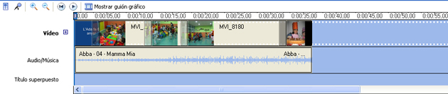
- ic10m3uf6u7_030a.jpg
Editors de música
L’edició d’àudio és tot un món, però, per si us pot ser útil, aquí teniu alguns recursos del web que us poden resultar interessants:
- Programari Adacity: http://www.bajame.net/Audicity-1_3_5.htm
- Efectes d’àudio: http://efectos-de-sonido.anuncios-radio.com/gratis/index.php
El procediment per editar l’àudio es el següent:
- Feu una bona recerca d’àudio i guardar en una carpeta els més adients. Per tal de no augmentar el pes de l’arxiu d’edició, és convenient abans eliminar els àudios que no interessin.
- Determineu quin pes té la banda sonora en la nostra producció. Si voleu editar un vídeo seguint les pautes de la música, primer de tot haureu de col·locar aquesta en la línia d’edició, per determinar la durada i el ritme de l’edició. Si la banda sonora no té cap importància, deixeu aquesta per més endavant.
- Agrupeu en la finestra de clips o per carpetes les músiques i els efectes sonors.
- Agafeu el clip d’àudio i arrossegueu-lo fins la línia d’edició o temps. Recordeu que en el programa pot haver més d’una pista d’àudio. Si és possible, col·loqueu el so original de la gravació en una pista, la música en un altre i la veu en off o efectes en una altra.
- Ajusteu l’àudio amb la major precisió possible.
- Talleu o dividiu l’àudio sobrant. El que és molt important és tenir en compte que si penseu fer una fosa amb un altre àudio, heu de deixar 1 ó 2 segons al principi i al final per poder fer correctament la transició d’una forma suau.
- Aneu col·locant tots el sons en el lloc corresponent.
- Anul·leu o abaixeu la veu o el soroll de fons de la càmera que no us interessin, en la pista corresponent. Cal anar en compte de no eliminar una part de so original que podem utilitzar més endavant.
- Reguleu els altaveus del vostre monitor i escolteu tot el vídeo.
- Apugeu o abaixeu el so, de la línia d’edició, per a una perfecta audició.
- Sovint interessa escoltar dos àudios a l’hora, per exemple una veu en off i la música. Si és així, i el programa ho permet, haureu de baixar la música perquè la paraula es pugui escoltar bé, i tornar a pujar la música quan aquesta hagi finalitzat.
- Recordeu que, a l’acabament de les imatges, la música ha de baixar lentament.
- És important no oblidar-se de guardar el projecte cada 5 minuts.
Important: Recorda que en alguns editors, per veure els efectes, les transicions o escoltar una música o efecte sonor en la línia d’edició, cal renderitzar el clip corresponent. Si aquesta acció no la fa automàticament, tu hauràs de donar l’ordre.
Aplicar l'audio en programaris específics
Windows Movie Maker: http://www.terra.es/tecnologia/articulo/html/tec2859.htm, o bé, entre les pàgines 21 i 23 de: http://mosaic.uoc.edu/pdf/Manual_Basico_de_Windows_Movie_Maker.pdf
Pinacle Studio: http://www.xtec.cat/audiovisuals/sav/jt0506/studio8/studioedicio.htm
Kdenlive: http://es.wikibooks.org/wiki/Kdenlive/Guía_rápida#La_ventana_de_Proyecto
L'exportació
Finalment hem arribat a visionar el treball i hem acabat la postproducció del nostre vídeo. Però ara cal anar en compte amb el renderitzat per no perdre qualitat. Per fer-ho, s’ha de tenir clar el destí de la producció. En funció d’aquest haurem d’escollir un format amb què la guardarem, determinant la resolució, la qualitat i la mida del fitxer.
Un consell que us donem, és exportar el vídeo amb la màxima qualitat possible que ens permeti el nostre equip, i després comprimir el material exportat a un vídeo de menor qualitat per penjar a Internet, CD, DVD, etc.
Si des de l’editor exportem o renderitzem a una baixa qualitat, el resultat serà pitjor de l’esperat. Sempre va bé tenir una còpia de seguretat de la pel·lícula en format DV o MOV i si és possible tenir una còpia en cinta.
Normalment, des de l’editor de vídeo s’ofereixen diferents possibilitats a l’hora d’exportar un projecte directament a cinta de vídeo o una gran varietat de formats:
- Gravar l’edició en una cinta de vídeo. Força recomanable per tenir una còpia segura.
- Exportar l’edició en un arxiu DV. En aquest format no hi ha cap mena de compressió i ofereix una bona qualitat.
- Exportar un arxiu en.AVI o QuickTime, perquè pugui ser reproduït en un CD-ROM o guardar en el disc dur.
- Exportar l’edició en altres formats perquè pugui ser difós a Internet, podcast, Mp3, Ipod, mòbil… Un bon còdec és el h.264.
- Exportar el muntatge a arxius. MPEG, per a la seva distribució en DVD. Un bon format és el Mpge-2.
- Enviar el vídeo per correu electrònic. La majoria de programes realitzen la compressió i obren el programa de correu automàticament.
Aquesta taula pot ser útil per consultar alguns aspectes interessants de les exportacions.
- 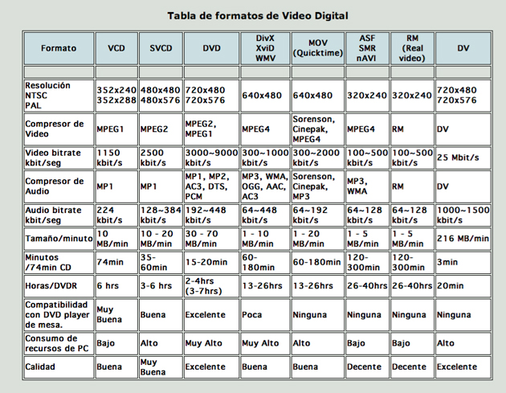
- ic10m3uf6u7_031a.jpg
En la pàgina web de Vdeoedicion http://www.videoedicion.org/documentacion/index.php?article=81 trobareu molta informació, conceptes bàsic de vídeo digital. A la meitat de l’article hi ha un apartat sobre arxius de vídeo digital força complert.
Paràmetres més importants que heu de tenir present a l'hora d'exportar
- Tipus de format i compressor: Veure la taula. DV millor qualitat per guardar el màster.
- Sistema de vídeo: PAL (Europeu).
- Fotogrames: 25 imatges segon (més qualitat), 15 imatges segon (menys qualitat).
- Resolucions: 720×576 (recomanable si feu servir DV), CD 640×480, WEB 320×240, 160×20.
- Pantalla: standar 4/3, panoràmica o HD 16/9.
Procediment per exportar el vídeo
- Assegureu-vos que el vídeo està completament acabat, sense cap errada.
- Si cal, renderitzeu tots els arxius necessaris.
- Deseu el projecte per seguretat.
- Exporteu el projecte en la millor qualitat possible: en cinta o en DV.
- Deseu o exporteu la pel·lícula, tingueu en compte que no és el mateix que guardar el projecte de vídeo. Ara el vídeo es convertirà en un únic arxiu.
- Introduïu el nom del vídeo (no del projecte) i la ubicació al disc dur.
- Escolliu en quin suport es vol el vídeo: cinta, disc dur, DV, DVD, correu electrònic, Mp3, mòbil, etc. No tots els programes ofereixen totes les possibilitats. En el programa que utilitzeu haureu d’escollir una de les opcions que s’hi ofereixen. Per tenir altres possibilitats haureu de recórrer a altres programes de codificació de vídeo.
- Escollir la qualitat del vídeo resultant.
- Hi ha programes que un cop escollida l’opció, automàticament et realitzen la compressió més adient. En canvi, en altres programes haureu d’indicar manualment quina exportació o compressió desitgeu. Recordeu que heu de tenir present: qualitat, mida, format, nombre de fotogrames, sistema…
- En funció dels paràmetres escollits, el programa us indicarà quan ocupa (pes) l’arxiu de vídeo. Si no teniu suficient espai al vostre disc haureu de rebaixar la qualitat en algun aspecte anterior.
- Feu clic en “finalitzar” o “ok” i podreu veure com ha quedat la pel·lícula.
Recordeu que si el vostre ordinador no pot reproduir un vídeo, és possible que no tingueu instal·lat el reproductor del sistema de compressió de vídeo adequat, aquí teniu els més usuals:
- RealPlayer: http://spain.real.com/player/win/
No tots els programes tenen les mateixes possibilitats a l’hora d’exportar el vídeo. Per tant alguns dels suggeriments que us fem, no són possibles amb el programa que esteu utilitzant.
Per fer altres opcions, hi ha programes de compressió de vídeo que us permeten canviar de formats i ajustar l’exportació d’una forma més professional, però per fer aquesta tasca heu de tenir coneixements de com comprimir un vídeo tenint present que: tingui una bona mida de pantalla, pesi poc i tingui bona qualitat d’imatge. Aquesta feina no és fàcil i requereix moltes hores d’experimentació. Aquí teniu alguns programes per si esteu interessats:
- Vídeo Converter. Conversor de vídeo universal per PC: http://total-video-converter.softonic.com/
- VisualHub. Conversor de vídeo universal per MAC: http://www.todoprogramas.com/macintosh/visualhub
Exportació en programaris específics
- Windows Movie Maker:en la web http://www.terra.es/tecnologia/articulo/html/tec2863.htm o, en format pdf, http://mosaic.uoc.edu/pdf/Manual_Basico_de_Windows_Movie_Maker.pdf Pàgines 23 - 24.
- Pinacle Studio: http://www.daboweb.com/foros/index.php?topic=20473.0
Elaboració de vídeos d'aprenentatge
Objectius: els objectius d’aquesta activitat són:
- Capturar seqüències de vídeo de processos que tenen lloc en l’escriptori d’un ordinador amb eines específiques.
- Elaborar vídeos d’aprenentatge, utilitzant les utilitats específiques que ofereixen les aplicacions que capturen seqüències d’accions en escriptoris.
Hi ha diferents tipus de programari que permet capturar seqüències d’imatges per poder disposar d’un fitxer de vídeo que contingui el que passa en un escriptori d’un ordinador, durant un període determinat.
Això és molt útil per als tècnics que han de generar vídeos d’aprenentatge que permetin visionar l’ús d’aplicacions, per exemple. També és útil per crear vídeos de demostració de programaris o de procediments o qualsevol altra utilitat que requereixi mostrar una seqüència dinàmica d’imatges.
CamStudio: un programari específic
Un programari que permet la gravació en un fitxer de vídeo d’un procés que transcorre en l’escriptori d’un ordinador és CamStudio http://camstudio.es/.
Baixeu-vos aquest programari del web i intal·leu-vos-el.
- 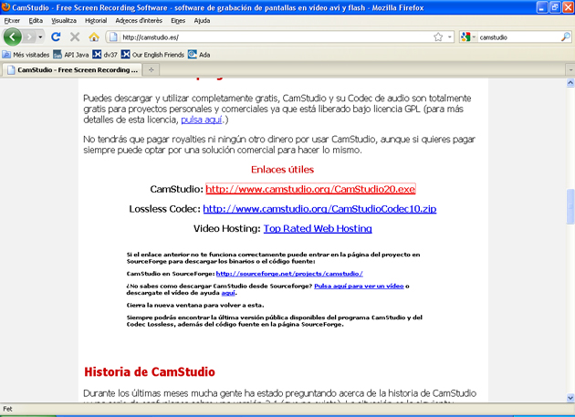
- ic10m3uf6u7_032a.jpg
La interfície del programari CamStudio és molt senzilla i intuïtiva.
- 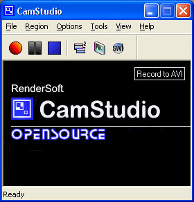
- ic10m3uf6u7_033.jpg
Les tres icones que apareixen en primer lloc a la barra d’eines d’esquerra a dreta serveixen, respectivament per, iniciar la captura de la seqüència de vídeo, aturar-la temporalment i poder-la reprendre més endavant i finalitzar la captura.
La quarta icona començant des de l’esquerra serveix per visualitzar o deixar de visualitzar la part inferior de l’aplicació CamStudio i el menú de l’aplicació.
El cinquè botó de la barra d’eines (anotacions de pantalla) permet editar etiquetes textuals per superposar-les a la imatge que es capturarà, de forma que la seqüència de vídeo resultant podrà ser explicada textualment mentre es va projectant.
- 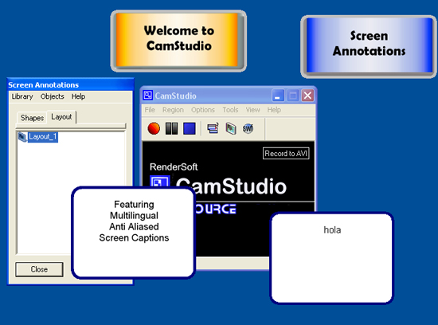
- ic10m3uf6u7_034.jpg
El darrer botó de la barra d’eines, el de més a la dreta, permet seleccionar el mode del fitxer de vídeo resultant (AVI o SWF).
Analitzant els diferents menús, l’aplicació permet, des del menú File, gravar, pausar la gravació o aturar-la. També permet sortir de l’aplicació (Exit).
Des del menú Region es permet fixar una regió o zona de la pantalla o escriptori que serà la part susceptible de gravació, obbiant la resta d’espai visible. També permet fixar com a zona de gravació la pantalla sensera (Full Screen).
El menú Option permet seleccionar paràmetres útils de configuració de les captures, com ara la resolució del vídeo, si es capura o no el cursor en la gravació, les opcions de l’audio, o opcions que faciliten la captura com ocultar el programari CamStudio en iniciar la gravació.
- 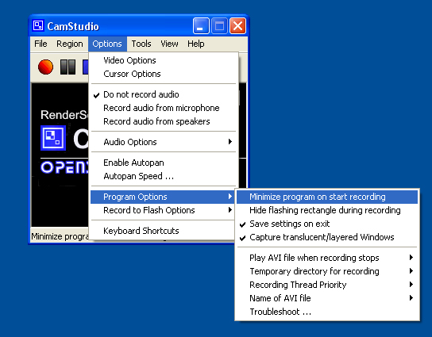
- ic10m3uf6u7_035.jpg
El menú Tools permet afegir anotacions de pantalla o de vídeo (Screen Annotations, Video Annotations), a l’igual que es pot fer a través dels botons de la barra d’eines. També permet fixar el mode d’enregistrament AVI o SWF.
El menú de View permet canviar entre tres modes de visualització de l’aplicació CamStudio (de forma similar a com es pot fer a través del botó de la barra d’eines): Normal View, Compact View, Buttons View.
L’apartat Help permet accedir a l’ajuda de l’aplicació a través de la web del programa, així com també permet obtenir informació del mateix i acceptar donacions, per al projecte.
Elaboració d'un vídeo d'aprenentatge amb una eina específica
Una vegada que el tingueu instal·lada una eina que capturi seqüencies de vídeo de l’activitat que es desenvolupi en el vostre escritori, podeu provar de capturar com accediu al Campus Virtual de l’IOC, us acrediteu i accediu a un curs.
Per fer-ho, primer captureu amb el programari específic (CamStudio) tot el procés i posteriorment editeu-lo de forma que quedi un programa d’aprenentatge net, sense elements superflus o erronis.